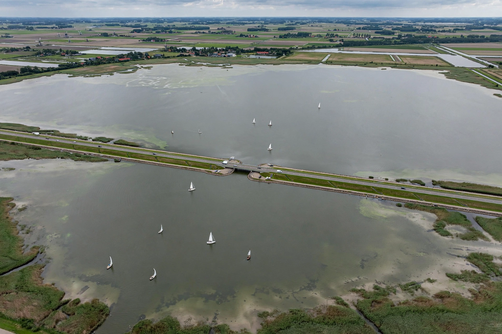

Markermeer
| Markermeer | |
|---|---|
 | |
| Location | North Holland / Flevoland, Netherlands |
| Type | Fresh water lake (former bay of the Zuiderzee) |
| Surface area | 700 km² (270 sq mi) |
| Average depth | 3–5 m (10–16 ft) |
The Markermeer is a 700 km² (270 sq mi) lake in the central Netherlands in the provinces of North Holland and Flevoland. A shallow lake at 3 to 5 m in depth, bordering Amsterdam to the south-west, it is named after the small former island, now peninsula, of Marken on its west shore. Its southwestern part is known as the IJmeer.
History
The Markermeer was originally part of the Zuiderzee, a shallow bay of the North Sea. The completion of the Afsluitdijk in 1932 cut the Zuiderzee off from the sea, creating the freshwater IJsselmeer. The Markermeer was separated from the IJsselmeer proper by the completion of the Houtribdijk in 1976, which carries the road between Enkhuizen and Lelystad.
The lake was intended to be drained as the Markerwaard polder under the Zuiderzee Works, and at one stage Lelystad Airport and new towns were planned on the reclaimed land. After decades of debate, the government decided in 2003 not to proceed with reclamation, and the Markermeer remains open water. Beginning in 2016, the Marker Wadden project created a group of artificial archipelagos in the northern lake from sand, clay and silt, intended to restore bird and fish habitat and improve water quality.
Ecology and recreation
The lake suffers from silt accumulation that clouds the water and smothers the bed, reducing its ecological value; the Marker Wadden and other measures are intended to address this. The Markermeer is popular for sailing and other water sports, with marinas at Hoorn, Enkhuizen, Monnickendam, Volendam and Almere.
See also
References
Rijkswaterstaat, information on the Markermeer and the Marker Wadden project.